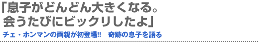
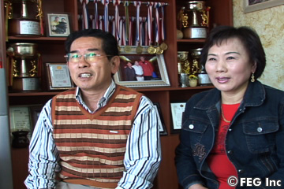
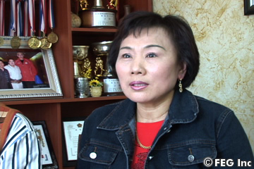
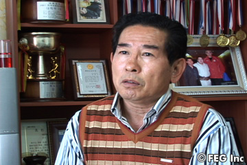
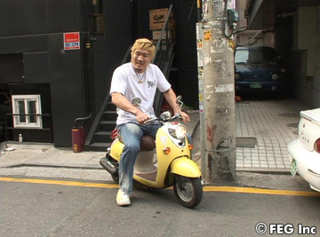
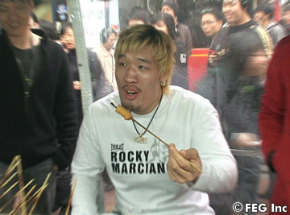
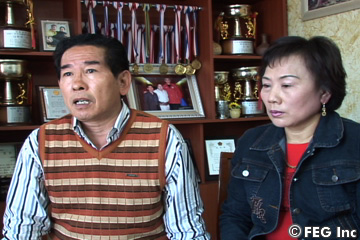

チェ・ホンマンが総合格闘技ルールでブロック・レスナーと闘うことで注目を集めている、『SoftBank presents Dynamite!! USA in association with ProElite』（6月2日＝現地時間、アメリカ／ロサンゼルス・メモリアル・コロシアム）。体のサイズと同じように、ホンマンにはスケールの大きな試合が期待されている。そんな奇跡の男を世に出した両親とは、どんな人物なのか。ホンマンの両親を直撃し、自慢の息子を語りまくってもらった！
思わず自分に『デカッ!!』
 ――お子さんはあんなに大きいのに、ご両親は普通のサイズなのですね。
母 ええ。あの子は特別ですから（笑）。
父 気づいたら、母さんだけでなくワシも超えてしまっていた。でも、あいつが一番、驚いていたな。
――それはご本人も話していました。鏡に映った自分の姿があまりにも大きいので、思わず『デカッ!!』って言ってましたから（笑）。
父 そりゃあ、まあデカイよな。
母 生まれたときも大きくて、4006グラムでしたよ。
父 ほかの子供よりも、かなり大きかったのは事実だな。
――中学生の頃から大きくなってきたそうですが、本人はそのことで辛い思いをしていたのでしょうか。
父 中学2年生のときから急激に大きくなって、高校1年生のときは180cmくらいだったな。釜山に行ってからは、毎年、夏休みや冬休みで帰ってくるたびに10cmずつ伸びててビックリしたなぁ…（笑）。
小さい頃は“恥ずかしがり屋さん”
 ――ホンマン選手は幼い頃、どんなお子さんでしたか？
父 言うことを良く聞く優しい子で、親を困らせたことはなかったかな。ワシらは自営業なので、あの子と一緒に過ごす時間は少なかったけど、聞き分けの良い子だった。
母 そうね。あとは幼い頃から欲張りね、ウフフッ。でも、お父さんの言うように私たちを困らせることもなく、言いつけも良く守っていたと思いますよ。
――いたずらっ子な面は？
母 ありましたよ（笑）。でも、幼稚園では写真を撮る時に「人がいっぱいいるから」って、恥ずかしがって撮らなかったこともありましたね。今と違って恥かしがり屋さんでしたよ。
――ラップを歌いながら入場することもなかったわけですね（笑）。
母 ウフフッ（笑）、そうですね。
――あと、“欲張り”だったというのは？
母 捨ててあるものを何でも拾ってくるんですよ。例えばゴム手袋とか、生活用品などをたくさん拾ってきましたね（笑）。
――ずいぶん親孝行なお子さんですね（笑）。
ホンマンは意外と“怖がり”だった!?
父 そういえば、あの子は昔から家の戸締り、鍵をしっかりと掛けていたな。女の子みたいに細やかで、点けっぱなしの電気を消したりね。
母 ただ怖がりなだけよ、ホンマンは。ウフフ（笑）。
――今の彼なら、何も怖いことはないと思いますよ。
母 今でもそうですよ。家に帰ってきたら、戸締りはキチンとしてますから。
――怖いから（笑）？
父 いやいや、それは怖くてではなく習慣だよ。あいつは、幼いときから几帳面だったからね。
――学校に通っていたときのエピソードはありますか。
父 小学校、中学校のときは、それほど大きな出来事はなかったかな。でも、高校の修学旅行のときに、ちょっとした事件があった。それは暴力事件だったんだ…。
――い、いったいぜんたい、何があったのですか!?
仰天!! ホンマンが暴力事件!?
 父 あれは、修学旅行で江原道に行ったときのこと。一つの部屋に何人かで寝るんだが、そのなかのクラスメートの一人がホンマンのお金を盗んだんだ。犯人は分かっていたんだが、返してくれなかった。だからホンマンは一発、殴ってしまったんだ。それで相手のお子さんの瞼が切れてしまって、旅行の途中で帰ってきたことがあったな。ワシたちが空港に行って、相手のご両親に謝罪したんだよ。
――おとなしいホンマン選手が殴ってしまった!? それは驚きですね!!
父 ああ、本当にビックリしたよ。担任の先生から電話をもらって、「瞼を切って大変なことになってます」と言うんだからな。空港に着くまでは不安でいっぱいだったが、幸いなことに大きなケガではなく、相手のご両親も「子供のことですから」って言ってくれて謝罪だけで終わったんだがね。
――そのときにホンマン選手は何て言っていたのですか。
父 ホンマンは「誰の仕業か分かっていたのに、返してもらえないから腹が立って自分でも思わず…殴ったら目に当たってしまった…」と言っていたな。ホンマンがワシたちを困らせたのは、あれが最初で最後だけどね。
母 私も相手の子のケガが心配で心配で…。
父 親は誰だって子供の心配をするものだ。殴った子も、殴られた子も、どちらも大切な子だから。大問題にはならなかったけど、そのあとホンマンを叱ったよ。「どうして顔を殴ったんだ」とね。「殴るなら腹とか足とか、他の部分にしろ』って。
――それはまた強引な（笑）。
父 それから「そんなに殴りたいなら、ボクシングをやれ」って言ったらね、ホンマンは「顔を殴られるのは嫌だから、絶対にやらない」って（笑）。そんな子がK-1の世界に行くとは思いもしなかったよ。
有名人の息子を持つ親の悩み
――幼いときと比べると、今の彼は？
父 ホンマンが大切なのは変わらないけど、名前が知れ渡ってからは、良いこともあるけど、寂しく思うことも多い。以前は銭湯にも一緒に行っていたけど、今はちょっと少し距離があるかな。父子の間でもね（笑）。
――最後に銭湯に行ったのは。
父 3年は経つかな（しみじみ）。あのときは、背中を流してくれたっけな。今は、それができないのが寂しいよ…。
母 シルム（韓国相撲）のときは、休暇にはよく帰って来ていたんです。
父 優勝するたびに、プレゼントを必ず持って来たね。家にあるエアコンは『天下壮士』のときのプレゼント。誇らしい息子だけど、もう少し一緒にいたいね。
両親だけが知る、ホンマンのシルム時代
 ――シルムを始めてからは、すぐにトップに登り詰めましたね。
父 背も高いし、体格もいいから学校のシルム部から全国体育大会に出ることになった。そこで優勝して、その年の8月にキョンウン高校のチョ・テウォン監督が見出してくれたんだ。「自分が育てるから、任せてほしい」って言ってくれて、単身で釜山へ送り出した。そこからホンマンのシルム人生が始まった。もし、それより早くバスケットのチームが勧誘に来ていたら、そっちに進んでいたかもしれない。
――でも辛い思いもしたでしょうね。
父 シルム部に入ってからは、辛かったと思うよ。背が大きすぎてね。先輩たちが厳しい練習をさせたり、酷いしごきにあったようだ。あるときはシルム部を辞めるというところまでいったな。そんなときに監督や先生が良い助言をして下さったから、今のホンマンがいる。
――内気な性格なので、ご両親には話さなかったと思いますが。
母 話しませんよ、家ではね…。
父 一番、辛かったのは釜山に行ってからだろうな。学校に寄宿舎がなくて、ホンマンは学校の講堂でいつも一人で寝ていたんだ。ホンマンは「飛び回る虫たちと友達になって遊びながら寝てるよ」って笑っていたけど、それを聞いて辛かったなぁ…。監督に強く抗議したこともあった。「しっかり育てると言いながら、どうして講堂で寝かせるんだ」ってね。
――そうでしょうね。
父 すると、「学校の財政上、難しかったが寄宿舎を急いで建てる」と約束してくれた。結局、ホンマンが卒業するちょっと前に寄宿舎ができたので、数ヶ月だけそこに寝ることができたみたいだ。
母 本当に辛かったでしょうね（ちょっぴり涙）。
父 あの頃が一番、辛かっただろうな…。1年生のときは先輩に酷くしごかれるし、規律も厳しいから、何度も泣いたはずだね。体育会系はみな同じだろうけど、軍隊以上に厳しいから。
母 でも、家に帰ってきたらそんな素振りは見せないんですよ。
ホンマン、ホンマに親孝行!!
――当時、嬉しかったことはありますか。
父 一番、嬉しかったのは、東亜大学に進んで１年で6冠王になったこと。『天下壮士』のタイトルを取った時は、その賞金の中から村のみんなに1000万ウォンも出してくれたんだ。みんなで有益に使ったよ。
――苦労を知っていたから、喜びも大きかったのでは。
父 その喜びと言ったら…もう…言葉では言い表せないよ。この家もプロになってLGとの契約金で買ってくれたんだ。自分の息子だけど、本当に親孝行な息子なんだよ。そのあと、K-1に転向したけど、いくら試合でも息子が誰かにパンチをもらう場面は心が痛むよ…。
息子の試合を生観戦した両親は…
――試合は見るのですか？
父 ええ、いつも日本へ応援に行くんだ。ホンマンは気を使って、来なくてもいいと言うんだけど…。
母 こっそりと行くんですよ。
父 ホンマンには内緒でね。今までは勝っていたから試合後に会ったりしていたけど、負けたときは辛かったな…。だから、ホンマンの顔を見ずにすぐに帰って来ることもある。息子も分かっているはずだけど。
――お母さんは試合を見ると…？
母 緊張しすぎてね…まともに見れないの。でも目をつむりながらも、見なくっちゃっと思っています（笑）。
――試合に行けないときは。
母 静かに二人でテレビを見ています。でも会場の方が緊張するわよね、お父さん？
父 ……うん、母さんの言うように全然、違う。気楽なのはテレビ。だけど会場で見るときは、いつも不安に胸を支配される。ホンマンの試合の直前になると、もう怖くなったり、不安になったりで胸がドキドキだよ。テレビで観戦するときは、焼酎を飲んで落ち着いてから見るんだけどね。
――ホンマンがK-1に挑戦するって決めた時は？
父 最初はK-1をすることには反対だった。ほとんど人を殴ったことがないのに、どうしてK-1なんだと聞いたら「頑張ってみる」と言うんだ。そのあとでホンマンは「数年間は一生懸命に頑張って、一度、世界チャンピオンになってから辞める」と。ワシとはそういう約束だ。でも、気づいたらワシもK-1マニアになっていたけどね（笑）。ほとんどの選手は知ってるし、この試合はどちらが勝つか負けるかまで分かる。
母 ホント、お父さんは凄いのよ。全部、勝敗が当たるんですから。
ホンマンVSレスナーをズバッと予想!?
――どんなときに勝敗が分かるんですか。
父 相手の選手を見たらなんとなく分かるね。「ああ、今回は勝てるな」とかね。ホンマンはまだK-1に行って3年目だけど、来年あたりは頂点に立てるんじゃないかな。
――『Dynamite!! USA』では、ブロック・レスナー選手と対戦しますが、父さんの予想は…？
父 ん、ワシの予想かい!? それは秘密だ。
――では、お母さんは？
母 ウフフッ、私も予感はありますよ。でも、教えません（苦笑）。
――試合直前にホンマン選手が闘っている夢を見たりは？
 母 何日も寝つけなくて、夢を見る暇もありませんよ。私の方が緊張してしまってね。
父 一番、緊張するのは試合前日。試合のことを考えると落ち着かないし、嫌なことばかり考えてしまうから寝つけないんだ。きっと、他の選手のご両親も同じだと思うんだけど……酒がないとダメだね（笑）。
――まるでご両親が試合をするようですね。試合前にホンマン選手と電話をすることは。
父 しないよ。負担にならないようにしないとね。数日前に「日本に行ってきます」と電話は来るけど、それ以降は絶対に連絡をしないようにしている。
母 シルムの頃は前日でも平気でしたけど、K-1に行ってからは電話をしたくてもしないんですよ。でも試合後はすぐに電話をしてくれるんです！
『Dynamite!! USA』のリングへ立つ息子へ
――6月2日、10万人の大観衆の前に立つホンマン選手をどう思いますか。
父 試合をする限りは勝たなくてはいけない。相手は、アメリカでレスリングのチャンピオンになった選手だと聞いている。だから、一層の努力が必要だ。でも最善を尽くしてトレーニングをすれば、いい結果がついてくるもの。今でもホンマンは、トレーニングのことしか話さないからね。父としては、「今日はどれだけ頑張った？」と聞くだけ。他の話はしないんだ。
母 私は「ケガだけはしないでね」と言っています。それが一番、心配だから。
父 それは男と女の違いだね。やはり母親は勝つことよりケガをしないでほしいと願うものだ。ワシは、試合をする以上は勝たなければいけないと考えているけどね。
――ホンマン選手はすっかり韓国の代表選手になりましたね。
父 息子が有名になって、当然、誇らしく思うよ。最近は酒のつまみでもホンマンの話が出るくらいだからな。息子を誉められるのはホントに嬉しいよ（笑）。
――自慢の息子ですね（笑）。最後に息子さんへのメッセージをお願いします。
 父 ホンマン、6月の試合は目前だか、しっかりご飯を食べて、トレーニングを積んで、いい結果を期待しているよ。ホンマン、ファイト!! あと今度、一緒に銭湯へ行こうな（笑）。
母 ホンマン、母さんはいつもケガをしないか心配ばかりしているけど、とにかく一生懸命に頑張って、いい成績を出してね。■ |